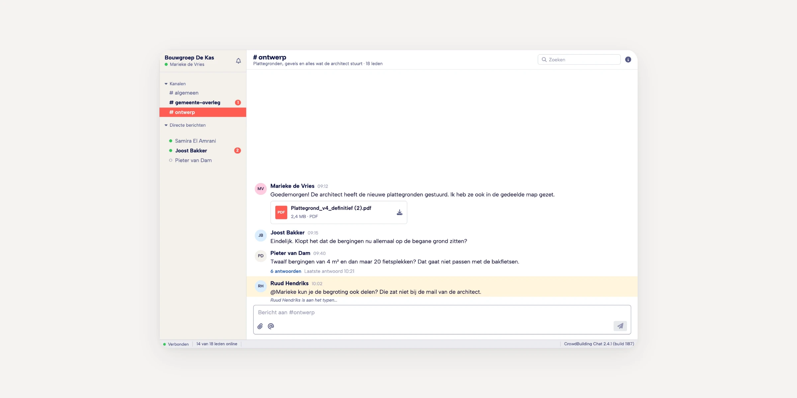
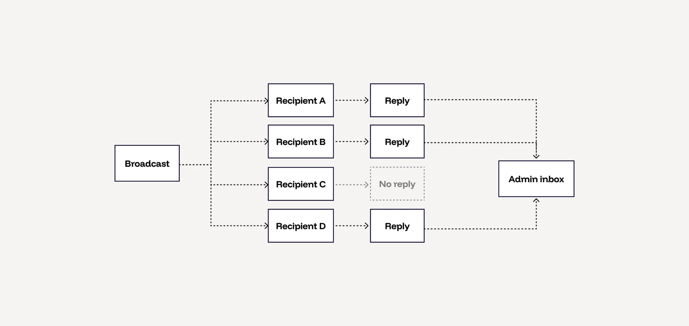
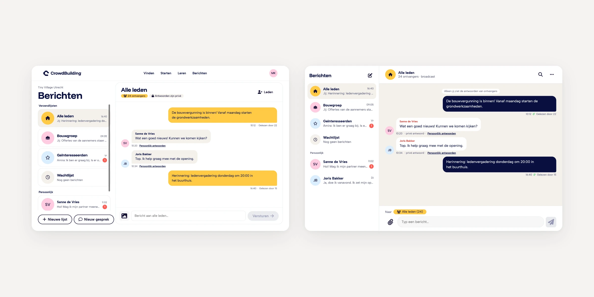

August 2026
A broadcast is not a group chat
One finding turned messaging from a chat between strangers into a tool for admins to keep their members updated.
- Role
- Senior Product Designer, sole designer
- Company
- CrowdBuilding
- Timeline
- May 2026, picked up again in August 2026
- Platform
- Web
01
Impact
- Increase in total messages sent
- +43%
- Increase in read rate within 72 hours
- +38%
- Increase in reply rate
- +17%
Giving admins a clear way to create and send broadcasts let them keep their group informed and engaged. Replacing the cumbersome third-party messaging app led to a significant increase in communication.
02
Context
Admins on CrowdBuilding need a way to keep their members updated. Messaging ran on an external library, essentially a copy of Slack, and it worked poorly.
Part of the problem was the implementation. The bigger part was the audience: most of our users had never used Slack, and for them it was simply too much.
We could have improved the existing tool’s interface. But after a couple of iterations, it was clear that building messaging in house would be easier, and it gave us the chance to design it around how our users actually communicate.

03
Reframe
Not a marketplace yet. A scouting platform.
A vibrant marketplace where everyone finds each other
- Landowners find buyers
- Experts find clients
- Initiatives find members
A scouting platform for initiative takers
- Experts weren’t using it
- Landowners struggled to use it
- Initiatives used it as one channel to attract members, next to their own website, Facebook group and Instagram
When I started, everyone shared the marketplace picture. Before designing anything, I tested it by talking to users, and it didn’t hold up. The people actually using CrowdBuilding were initiative takers, and for them it was a place to scout for new members, not where their community lived.
That changed the question messaging had to answer. Not “how do strangers talk to each other?” but “how do initiative admins keep the people they’ve found engaged?” Every decision after this point follows from that shift.
04
Problem
It’s mostly admins who message
About 80% of users are regular members, and for them messaging is always one to one. Admins are different. They message one person, and they message many people at once.
So one tool had to work for two use cases: broadcasts from admins, and one-to-one messaging for everyone.
That raised the questions the whole design hinged on:
- Where does a reply to a broadcast land?
- How does an admin keep track of the conversation when replies come back from many members?
Two constraints shaped the answer. The system was built as a broadcast system from the start, so the model had to work with it. And for privacy reasons I couldn't use screen recordings to see how people actually used messaging.

05
Method
Talk, measure, then prototype
Without screen recordings, I combined two sources. I talked to admins and members, and I looked at the data we did have: the ratio between messages sent, read and replied to. That showed where conversations stalled.
Later I vibe-coded working prototypes and sent them to users, so they could react to something real rather than to static screens.

06
Assumptions
What we got wrong
We assumed members wanted to chat.
What happened We pictured a lively, highly interactive platform, but the product wasn’t there yet. For now, the people who wanted to communicate were admins, keeping their members updated. Most members weren’t looking to chat.
What changed We designed messaging around admins: broadcasts to keep members informed, and simple one-to-one conversations for everyone else. This is where the broadcast model came from.
We assumed CrowdBuilding was a vibrant marketplace.
What happened Experts weren’t using it and landowners struggled to. The real users were initiative takers, scouting for members.
What changed The biggest shift of the project, covered in the Reframe above. Messaging became a tool for initiative admins, not a marketplace for strangers.
We assumed our audience knew how to use Slack.
What happened Most of our users had never used Slack. Instead of familiar, it felt like too much.
What changed We designed around how our members actually communicate: simple one-to-one conversations, and broadcasts for admins.
07
Decisions
Three calls, three trade-offs
Broadcast, not group chat
Admins send one-to-many messages as broadcasts, which keeps their workspace focused instead of turning every update into a noisy group thread.
Trade-off: members don't see each other's replies, so there's no group discussion around an update.
Replies to broadcasts live in two places
Admins can find all replies to a broadcast under Sent, and can also reach each of them from their inbox.
Trade-off: it might feel redundant.
Sent and Inbox are separate tabs
Admins need to see what they sent out to their group.
Trade-off: a second tab adds complexity.
08
Solution
We shipped the in-house messaging tool, replacing the Slack-style chat. Members get simple one-to-one conversations. Admins can message one person or broadcast to many, with replies they can keep track of.
To broadcast, an admin picks recipients from their initiatives or personal contacts, or selects everyone in an initiative at once. Each reply lands in the admin’s inbox as a one-to-one conversation with that member, linked to the broadcast it answers.
09
Reflection
What I'd do differently
I'd explore letting admins choose whether replies to a broadcast are visible to everyone or only to them. Some updates invite discussion, and others don't.
I'd also talk to users more, and sooner. There were moments when we could simply have asked, and instead spent two hours in a theoretical debate.